Qwen3.8-27B: quants compared
The same model in 19 variants, largest file first. The smaller the file, the fewer bits are left per weight. The full-precision variant ran in the cloud, all others on the Mac Studio. Click a picture to open the giraffe.
bf16Cloud via OpenRouter
full precision, 16 bits per weight
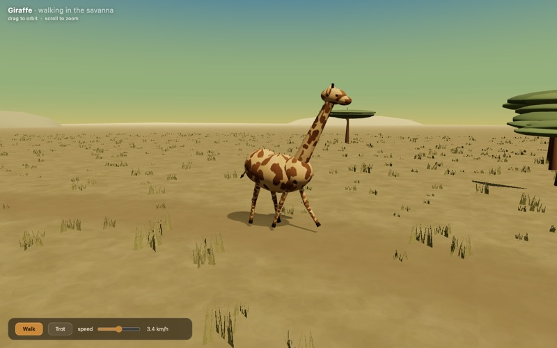
pi52 min
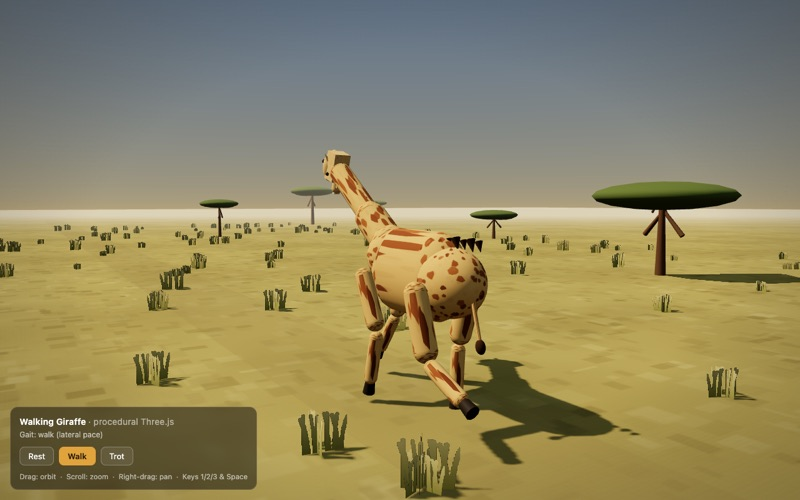
OpenCode37 min
UD-Q8_K_XLUnsloth Dynamic 3.0
31.5 GB≈ 9.3 bits per weight
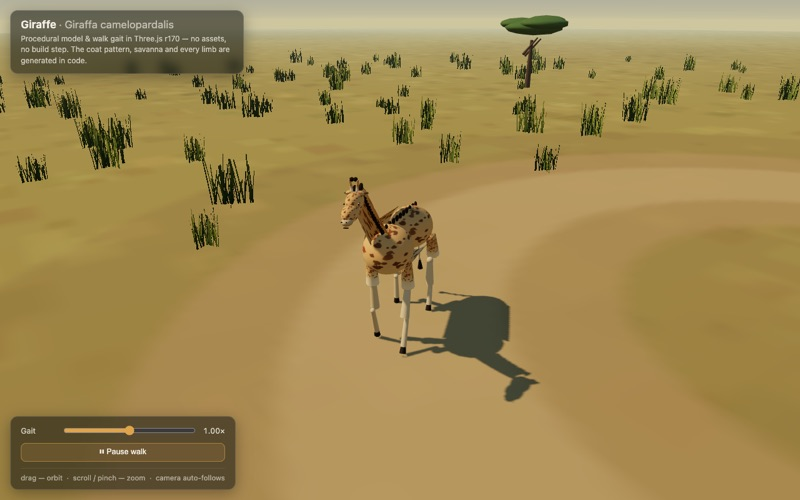
pi63 min
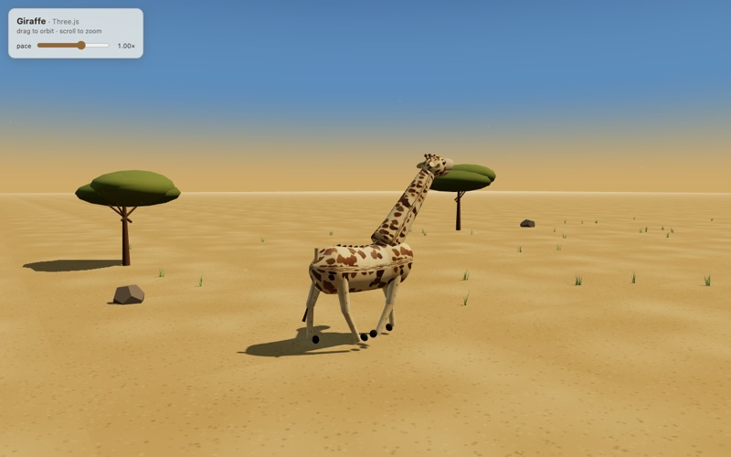
OpenCode43 min
Huihui-Qwen3.8-27B-abliterated Q8_0
29.0 GB≈ 8.6 bits per weight

pi73 min

OpenCode26 min
UD-Q5_K_XLUnsloth Dynamic 3.0
20.9 GB≈ 6.2 bits per weight

pi29 min

OpenCode1.6 h
UD-Q5_K_MUnsloth Dynamic 3.1
19.9 GB≈ 5.9 bits per weight
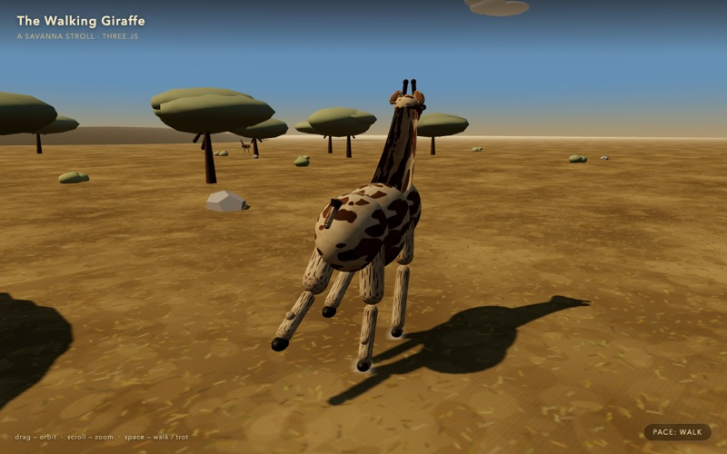
pi35 min
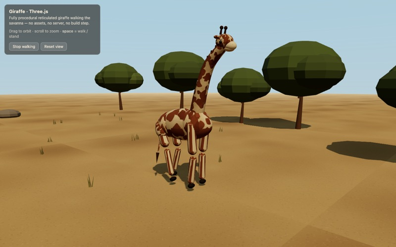
OpenCode34 min
UD-Q4_K_MUnsloth Dynamic 3.1On the main page
16.6 GB≈ 4.9 bits per weight

pi46 minSmall, pale and crudely built.

OpenCode52 min

UD-IQ4_XSUnsloth Dynamic 3.1
14.4 GB≈ 4.3 bits per weight
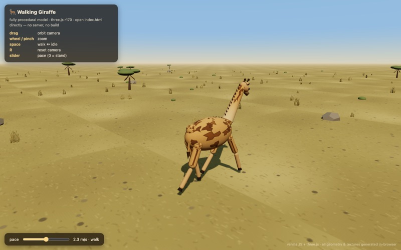
pi24 min
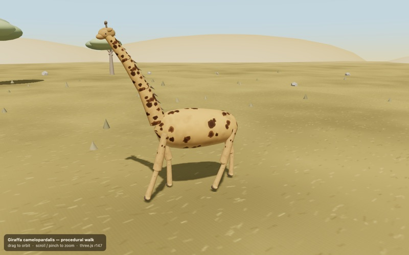
OpenCode47 min
UD-Q3_K_XLUnsloth Dynamic 3.1
13.1 GB≈ 3.9 bits per weight
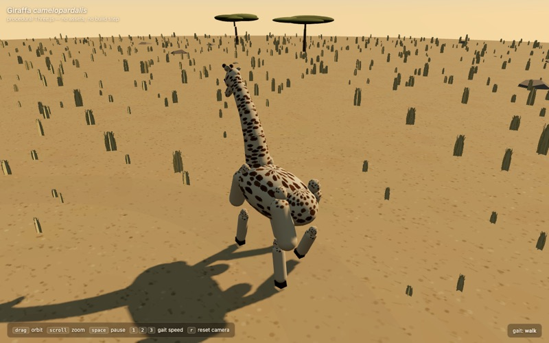
pi1.7 h
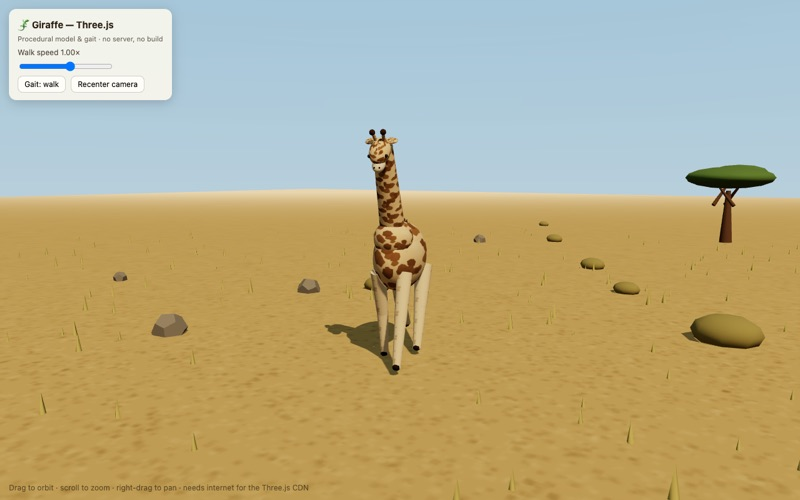
OpenCode28 min

UD-IQ3_SUnsloth Dynamic 3.0
12.0 GB≈ 3.6 bits per weight
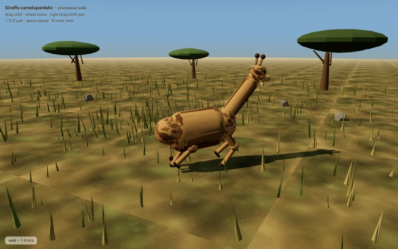
pi36 minThe body is a cylinder, the neck a thin rod.
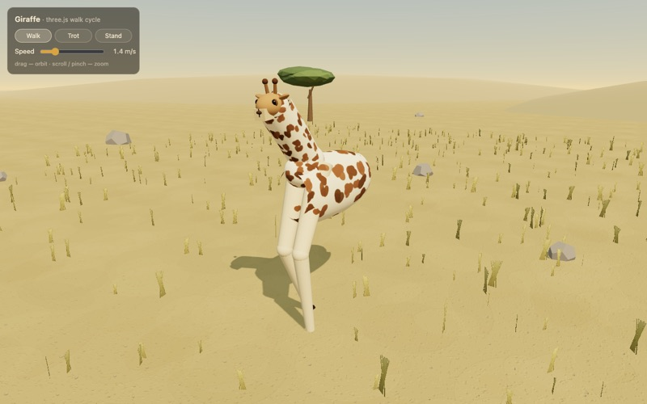
OpenCode73 minThe legs are white and have no joints.
UD-IQ3_XXSUnsloth Dynamic 3.0
10.9 GB≈ 3.2 bits per weight
piNo working giraffeNo page: in two attempts the model used up the 32,768-token output limit, mostly on thinking, and wrote no index.html.
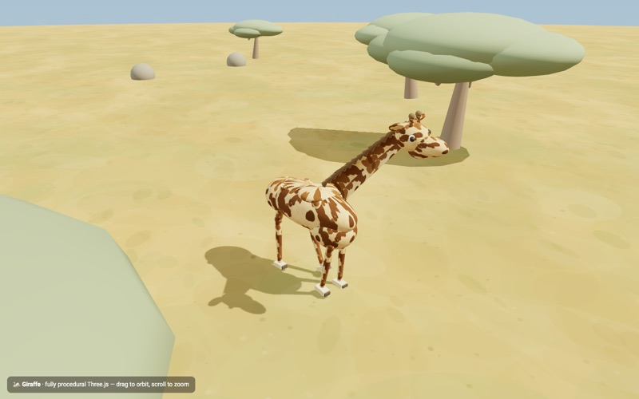
OpenCode59 min
UD-Q2_K_XLUnsloth Dynamic 3.1
9.9 GB≈ 2.9 bits per weight
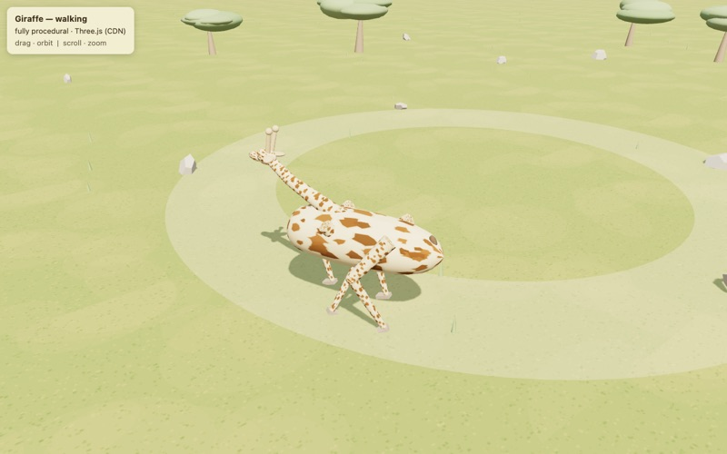
pi68 minThe body lies flat on the ground.
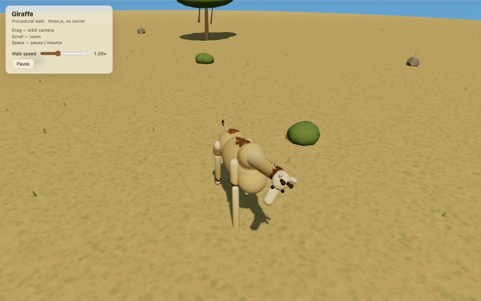
OpenCode62 minA lump of spheres, barely recognisable as a giraffe.
UD-IQ2_SUnsloth Dynamic 3.1
8.4 GB≈ 2.5 bits per weight

pi32 min
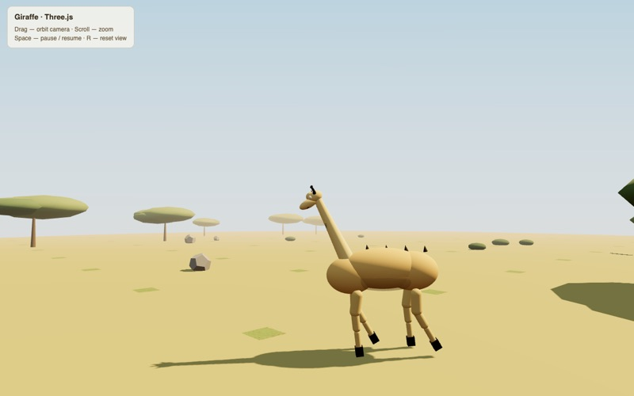
OpenCode10 minNo coat pattern, spikes on its back.
UD-IQ2_XSUnsloth Dynamic 3.1
7.6 GB≈ 2.3 bits per weight
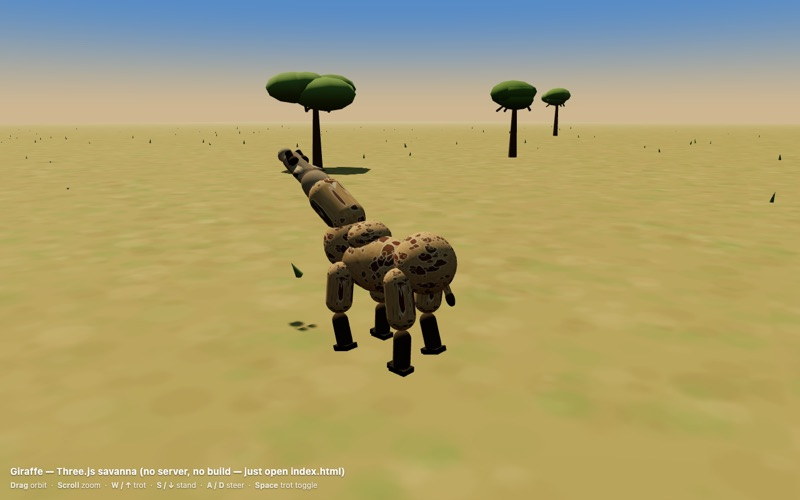
pi82 min
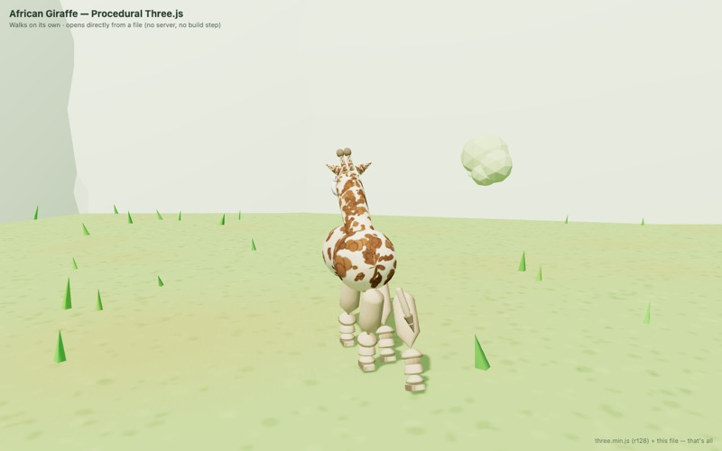
OpenCode39 min
UD-IQ2_XXSUnsloth Dynamic 3.1
7.2 GB≈ 2.1 bits per weight
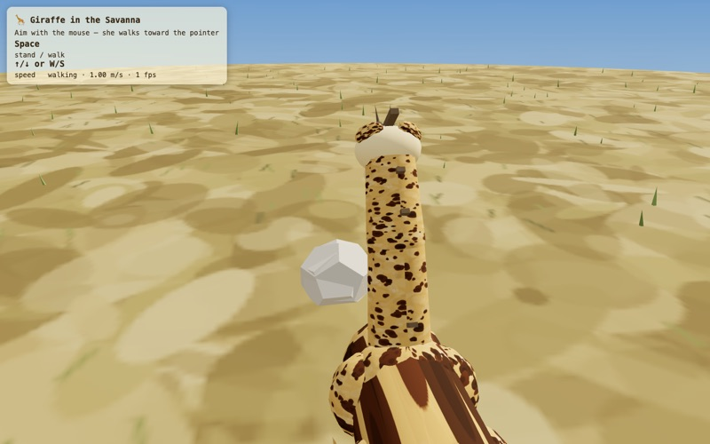
pi69 minThe camera sits behind the giraffe; mostly the neck is visible.
OpenCodeNo working giraffeEmpty page: a call to a function that does not exist in Three.js stops the script before the scene appears.
UD-IQ1_MUnsloth Dynamic 3.0
6.7 GB≈ 2.0 bits per weight
piNo working giraffeNo page: the model wrote giraffe.js but reported done in two attempts without an index.html.
OpenCodeNo working giraffeWhite page: loads Three.js as a local ES module, which the browser blocks when the file is opened directly; the page also never attaches the canvas.
UD-IQ1_SUnsloth Dynamic 3.0
6.2 GB≈ 1.8 bits per weight
piNo working giraffeNo page: in two attempts the model thought at length and then stopped without writing a file.
OpenCodeNo working giraffeNo page: the model ended both attempts after one reply without writing a file.